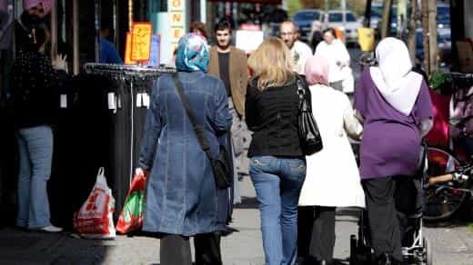

< < < Back
Saudi Arabia Wants To Help Outbreed Non-Muslims By Building 200 Mosques In Germany – Return Of Kings
Refusing to take in his own brother Arabs, the newly crowned King Salman of Saudi Arabia has offered to build 200 mosques in Germany for the latter’s new “migrants.” For years, Saudi Arabia has blatantly refused to accept any public profession of the Christian or Jewish faiths. It also readily clamps down on the practice of allegedly deviant forms of Islam, including the minority Shia denomination.
With the Saudis as the migrants’ magnanimous spiritual benefactors and the self-hating German government housing them, what could possibly go wrong?
The offer by Saudi Arabia to fund mosques in Germany is part of a calculated political and religious mission to keep Saudi Arabia purely Islamic, while exporting Islam to infidel countries in Europe. Riyadh is well aware that from Israel to England, Muslim populations continually outbreed reproductively stagnant indigenous Westerners.
By offloading its co-Muslims to Germany and other self-euthanizing societies, the Saudi Kingdom avoids importing Syrian and other Arabs less amenable to their historical narrative of divine rule and can increase its significant influence in expatriate Muslim communities abroad.
It does not matter that the German government has rejected the proposal of Salman. They have already, for years on end, done the work that should have fallen squarely on the shoulders of Middle Eastern leaders: dealing with their own regional problems and hatreds, rather than passing them onto Europe.
Thanks to its plain ludicrous admission of anyone and everyone, fueled by an illogical guilt complex because of what some people did between 1933 and 1945, Germany has built the equivalent of 2,000 mosques, not 200, to make itself feel better and exorcise the long non-existent spirit of Hitler.
SJWs will defend the protection of every local culture except Western ones
The late Saudi King Abdullah attended multiple inter-faith dialogues, including this one with the former Pope Benedict. Funny how a Saudi monarch can talk about tolerance when they have all excluded wholesale the practice of non-Muslim religions and other Islamic denominations.
Detractors will again allege that ROK is sponsoring xenophobia by criticizing the migrant invasion of Europe. And, again, they will structure their so-called arguments so that inconvenient truths like Saudi Arabia and a menagerie of other grossly xenophobic and racist countries are cordoned off from any and all discussion.
For decades, Middle Eastern states have had opportunities to correct their political and social climates of dictatorial rule, religious exclusion, arbitrary administration of “justice” and other maladies. The problem is that many of these intolerant views are actually espoused by large sections of the people, many of whom claim to flee oppression but simultaneously believe in their own form of it.
The simplification of the SJW narrative knows no bounds. It’s very easy for Western do-gooders to paint a blatantly anti-Western portrait without ever touching on the non-Western reasons why asylum seeker influxes into Europe occur. If we look at Saudi Arabia, just one of many local examples, it has created its own massive stream of refugees from Yemen, streams it refuses to take any responsibility for.
This year Saudi forces have indiscriminately shelled and air-raided civilian areas in Yemen. Yemeni rebels pose an intrinsic threat to the stability of the Saudi regime, which could be unseated by the sort of mass rebellions seen in its smaller neighbor. It is exactly this sort of appalling behavior, using non-combatants as pawns, that leads to Middle Eastern crises in the first place.
The Middle East is a fireplace of self-immolation

These don’t look like Syrians to me, but such a distinction is never raised by SJWs. Salient events like the Syrian Civil War are only conjured up to increase further the flow of migrants, whatever their origins.
The Middle East is, to put it bluntly, full of basket case regimes and poor excuses for civil societies. Admittedly, many are dictatorships. But if you topple one dictatorship and replace it with another, or with a democracy, do you really think a real civil society will blossom? In Iraq’s “democracy,” even before the onset of ISIS, a Shia-majority electorate only had the effect of isolating and even punishing the large Sunni Arab and Kurdish minorities.
As I will explain in an upcoming article about the need for Europe to take almost exclusively Christian refugees from the Middle East, the overthrow of the Mubarak regime by Islamists and then the overthrow of the Islamists by the military have done nothing to improve the plight of the country’s many persecuted Coptic Christians. Regime change matters very little in the present Middle East because any substituted set of elites that take power are not fundamentally different from those that they threw out.
Nazi Germany occurred more recently than much of the rather benign European mandate system which oversaw the Middle East from the time of Napoleon until the 1940s. So why is the Middle East’s self-immolation suddenly Europe’s problem and one which should be solved by resorting to “the white man’s burden” and its corollaries?
There is zero causality in terms of Europe being obligated to take in people better suited for other countries because European nations did x, y or z in the past. Arabs and Muslims killed each other or minority groups much less in the past than today. The barbarity of local individuals and groups is to blame, not historical European colonialism.
Why is the social engineering of “intolerant” countries reserved for over-tolerant Western states?

Before the CURRENT migrant crisis, Chancellor Merkel said multiculturalism had “failed.” Why the change of tune?
This paradox is never addressed. SJWs rally in the streets to yell “Refugees welcome!” (forgetting to investigate whether many are indeed legitimate refugees) and sit idly by as opportunity after opportunity arises for them to actually try and make the world better. And making the world better involves expecting and enforcing just 2% of the tolerance found in the West in the countries that call Western states xenophobic or Islamophobic.
Due to the population explosion within Middle Eastern societies, the acceptance of hundreds of thousands of migrants into Europe does nothing to combat the systems and mindsets in the Middle East itself that enable and propel such emigration in the first place. Meanwhile, European societies are expected to bend over backwards as their communities, already shellshocked from one-way demographic change over decades, suffer the additional burden of housing, clothing and feeding large cities’ worth of migrants in a period of sustained continental economic recession. Where is the similar support for Ukraine and Greece?
It’s easy to see nowadays how an average German can feel like a peasant. Whether King Salman, Chancellor Angela Merkel or someone else, a monarch, hereditary or elected, is trying to shove something down the throat of them or their country.
And usually it’s something bad.
Read More: Germany Is A Social Graveyard